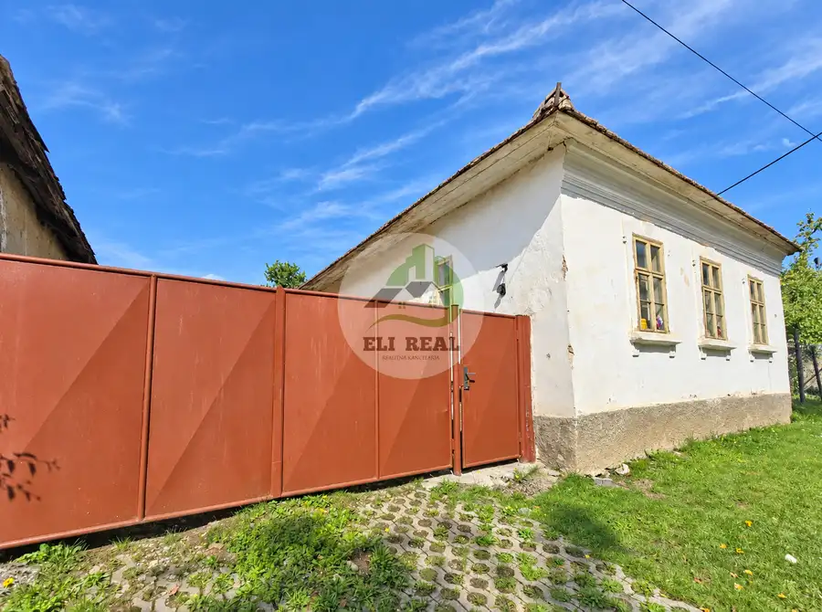
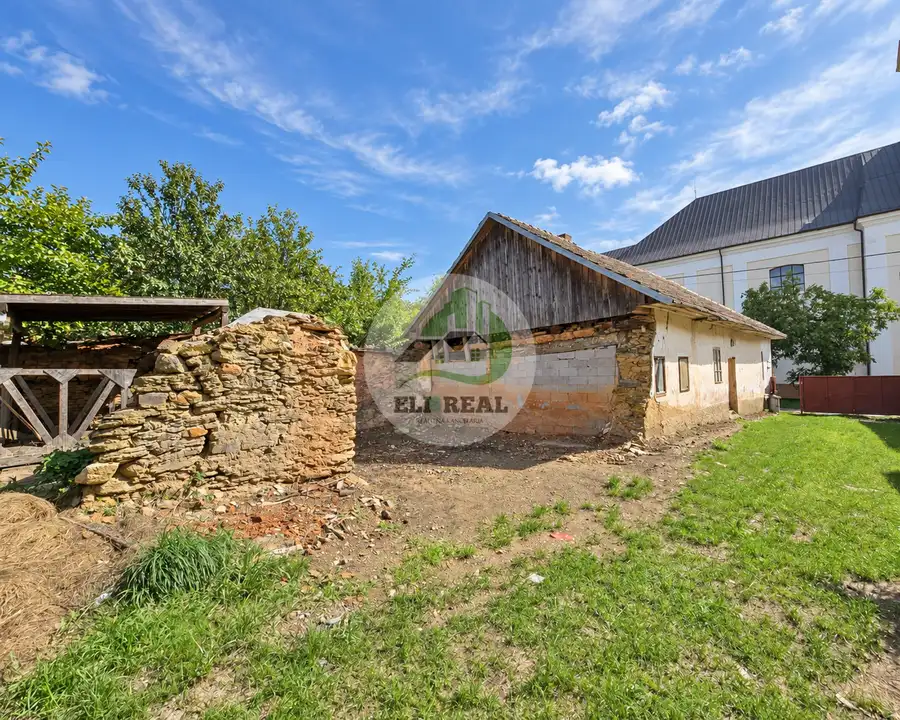
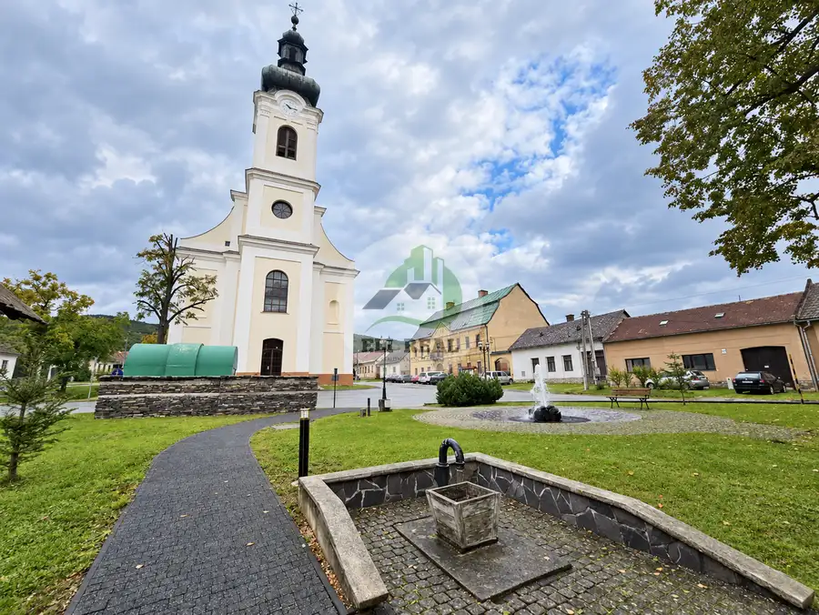
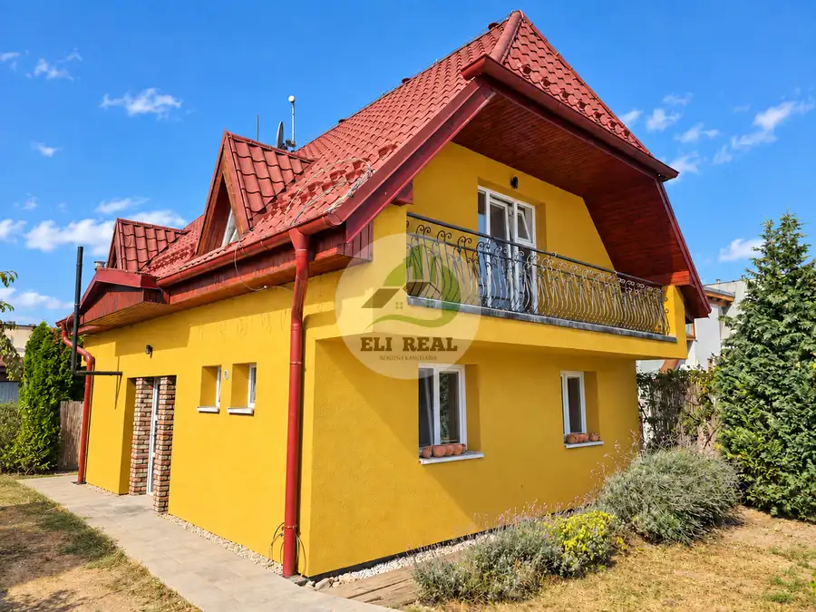
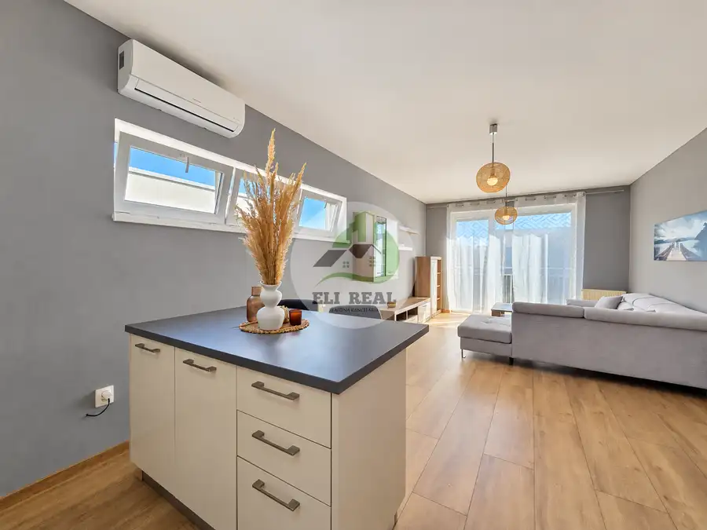

Na predaj rodinný dom s priestranným pozemkom, Vyšný Medzev, KE-okolie
Vyšný Medzev



- Plocha1071 m²
- StavPôvodný stav
O nehnuteľnosti
Bc. Alena KIMLEROVÁ a Lucia BALTESZOVÁ v spolupráci s realitnou kanceláriou ELI REAL Vám ponúkajú na predaj starší rodinný dom s priestranným pozemkom v pokojnej časti obce Vyšný Medzev.Nehnuteľnosť je v pôvodnom stave a vyžaduje si rozsiahlu rekonštrukciu. K domu prislúcha priestranný rovinatý pozemok s rozlohou 1071 m2, pričom šírka pozemku na jednej strane je cca 12 m, na strane druhej 17 m a dĺžka pozemku je cca 70 m.Nehnuteľnosť je umiestnená v prednej časti pozemku.Na pozemku sa nachádza:- prípojka na vodovod- elektrina- možnosť napojiť sa na obecnú kanalizáciuNehnuteľnosť sa nachádza v pamiatkovej zóne, čo musí budúci majiteľ zohľadniť pri prípadnej rekonštrukcii.V blízkosti pozemku sa nachádza, kostol, park, autobusová zastávka.V prípade ak Vás naša ponuka zaujala, neváhajte nás kedykoľvek kontaktovať, veľmi radi Vám nehnuteľnosť ukážeme i na osobnej obhliadke.V cene nehnuteľnosti je zahrnutý kompletný právny servis, vyhotovenie kúpnej zmluvy advokátom, poplatky spojené s prevodom vlastníckych práv na katastri a odmena pre sprostredkovateľa.Bc. Alena KIMLEROVÁ 0911 034 189 kimlerova@elireal.sk Lucia BALTESZOVÁ0915 251 522 balteszova@elireal.sk
Parametre
- Druh
- Rodinný dom
- Dátum zverejnenia
- 10. 09. 2025
- Dĺžka pozemku
- 70
- Energetický certifikát budovy
- nie je
- Plocha pozemku
- 1071 m²
- Počet nadzemných podlaží
- 1
- Rok výstavby
- 1940
- Stav nehnuteľnosti
- Pôvodný stav
- Terén pozemku
- Rovinatý
- Typ
- Predaj
- Typ konštrukcie
- Zmiešaná
- Zastavaná plocha
- 300 m²
- Úžitková plocha
- 1071 m²
- Šírka pozemku
- 17
Kde to je


Mohlo by Vás zaujímať

DomNové 471 000 €Na predaj rodinný dom | Košice - Džungľa Džungľa, Košice 93.4 m² Komerčné priestoryNové 1 365 000 €Na predaj reprezentatívna historická budova v centre mesta Košice Staré Mesto, Košice 516 m²
BytNové Cena na vyžádáníNa prenájom štýlový 2 izbový byt v lukratívnej lokalite | Košice - Na hore Dargovských hrdinov, Košice 2-izbový54.4 m²2. podlažie